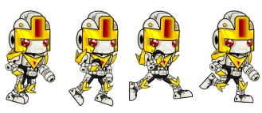

import pygame
WIDTH, HEIGHT = 800, 400
BG_COLOR = (140, 137, 246)
BIRD_SPEED = 5
pygame.init()
screen = pygame.display.set_mode((WIDTH, HEIGHT))
clock = pygame.time.Clock()
bird_surf_1 = pygame.image.load('img/bird1.png').convert_alpha()
bird_surf_2 = pygame.image.load('img/bird2.png').convert_alpha()
bird_surf_3 = pygame.image.load('img/bird3.png').convert_alpha()
bird_surf_4 = pygame.image.load('img/bird4.png').convert_alpha()
bird_surf = [bird_surf_1, bird_surf_2, bird_surf_3, bird_surf_4]
'''
Képek tárolása egyszerűbben:
bird_surf = []
for index in range(1, 5):
bird_surf.append((pygame.image.load(f'img/bird{index}.png')).convert_alpha())
'''
bird_index = 0
bird_rect = bird_surf[bird_index].get_rect(midleft=(0, HEIGHT / 2))
counter = 0
running = True
while running:
for event in pygame.event.get():
if event.type == pygame.QUIT:
running = False
screen.fill(BG_COLOR)
counter += 1
if counter % 7 == 0:
bird_index += 1
if bird_index > len(bird_surf) -1:
bird_index = 0
if bird_rect.right <= WIDTH:
bird_rect.left += BIRD_SPEED
screen.blit(bird_surf[bird_index], bird_rect)
pygame.display.update()
clock.tick(60)
pygame.quit()
1. Feladat
A
Hasznos linkek részben
több olyan weboldalt is találsz, ahonnan ingyenesen letölthetsz karaktereket.
Válassz ki olyat, amely több mozgásfázissal is rendelkezik, és használd fel
ezeket az animációban! Alkalmazz háttérképe(ke)t is!

2. Feladat - Robot
Készíts egy programot, amelyben a robot a képernyő középső harmadában
jobbra-balra rohangál. A robot mindig a haladás irányába nézzen! A képek
méretezését és tükrözését a kódban valósítsd meg! Válassz egy megfelelő
háttérképet is!